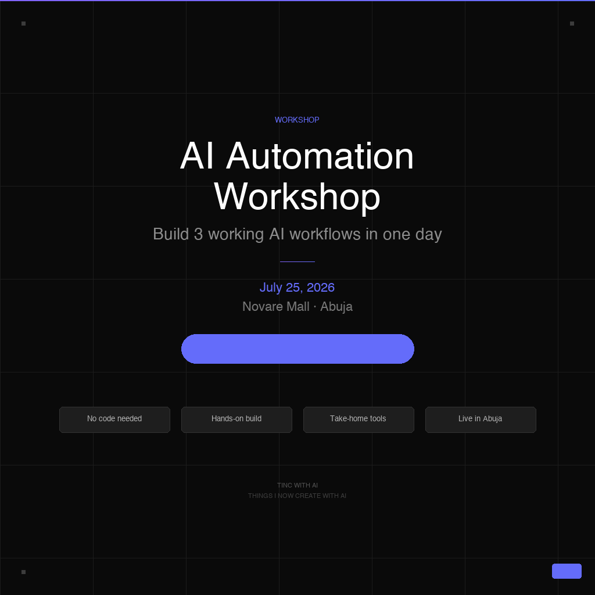

Find automation, governance, wellness, and delivery gaps.
Independent consulting for responsible AI transformation
Stones and Stacks
A consulting firm helping African organisations adopt AI, redesign workflows, strengthen governance, protect team wellbeing, and deliver complex work with discipline.
Explore servicesCreate practical roadmaps, policies, and operating models.
Deploy workflows, agents, tools, training, and PM systems.
Support teams until the new way of working sticks.
Founder-led. Practice-specific. Built for lasting transformation.
Consulting practices
Four focused practices. One coordinated delivery model.
01
AI Automation
Workflow audits, AI agent design, automation pipelines, business software integrations, and hands-on training for teams.
02
AI Policy and Governance
AI usage policies, data governance, risk assessment, board advisory, ethics training, and compliance-ready frameworks.
03
Digital Wellness
Digital wellness audits, sustainable productivity systems, employee wellbeing workshops, and technology habit design.
04
Project Management
PM process design, tool setup, fractional project management, PMO setup, and execution training for growing teams.
Engagement models
Start with clarity. Continue with implementation.
Assessment and Roadmap
Audit the current state and leave with an execution plan.
Implementation Sprint
Build, deploy, document, and hand over working systems.
Retainer Advisory
Ongoing governance, automation tuning, delivery support, and team guidance.
Workshop and Training
Focused upskilling sessions for professionals, teams, and leadership groups.
Featured programme
AI Automation Workshop
An intensive, hands-on Abuja workshop where professionals and teams build three useful AI workflows in one day.
- Sales or operations workflow
- Finance or admin workflow
- Content or marketing workflow

Saturday, July 25, 2026
10:00 AM – 4:00 PM
Novare Mall, Abuja
Early bird ₦50,000 · Standard ₦55,000
Company foundation
Built as a firm, not a personal brand.
Stones and Stacks was created by four practitioners pooling experience, resources, knowledge, and networks into a consulting company designed for long-term institutional credibility.
6 monthsFirst paid engagements, CAC registration, clear brand and website.
1 yearRepeat clients and at least one multi-practice engagement.
3 yearsRecognised consulting firm in the Nigerian AI and transformation space.
Contact